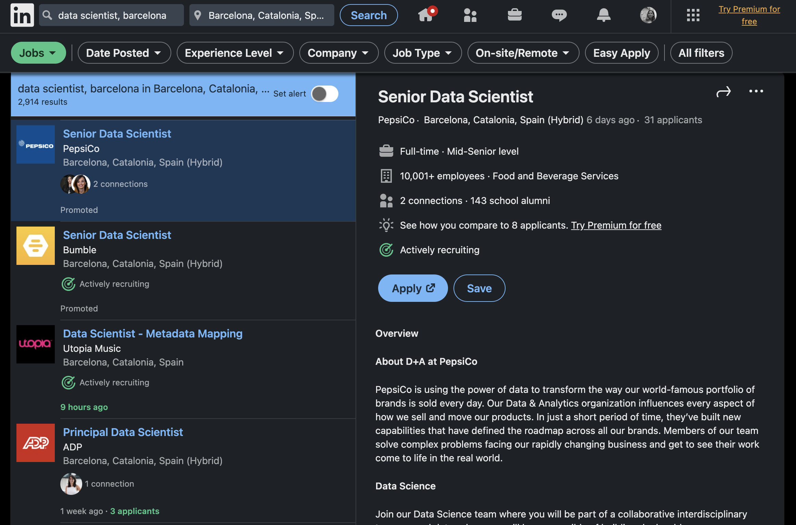

YouTube Trending Video Analysis
This project aims to analyze trending videos on YouTube by examining a dataset of 40,000 videos over a 200-day period with R. The analysis focuses on identifying common characteristics among trending videos and utilizes clustering techniques. Additionally, regression analysis is conducted to predict the view count of videos using various machine learning models
Predicting Real Estate Prices in NYC
Embark on a machine learning journey with me to predict NYC property prices with Python. We'll unravel hidden insights from data on property attributes, locations, and market trends. Together, we'll navigate the dynamic real estate landscape, empowering you to make informed decisions in the heart of the Big Apple.
Churn Prediction and Retention Strategies

Join me on an exciting machine learning adventure as we harness its power to predict customer churn for a bank with Python. Together, we'll dive deep into extensive customer data, transaction patterns, and behaviors to identify potential churners in advance.
Join me on an exciting machine learning adventure as we harness its power to predict customer churn for a bank with Python. Together, we'll dive deep into extensive customer data, transaction patterns, and behaviors to identify potential churners in advance.

Join me on an exciting machine learning adventure as we harness its power to predict customer churn for a bank with Python. Together, we'll dive deep into extensive customer data, transaction patterns, and behaviors to identify potential churners in advance.
Marvel Data Extraction and Interactive API

This Python project accessed the Marvel developer portal and utilized the Marvel API to extract data on Marvel characters. In Part 1, character information like IDs, total events, series, comics, and the price of the most expensive comic was retrieved. The data was stored in a pandas DataFrame called "df" and saved to a CSV file. In Part 2, an interactive API was created. Users could retrieve the DataFrame in JSON format, get specific character information, add new characters, delete characters, and implement OAuth authentication for secure access.
Scraping LinkedIn for Data Scientist Jobs

This Python project focuses on scraping LinkedIn, a popular networking platform, to retrieve information about available Data Scientist jobs in the Barcelona area. The objective is to generate a DataFrame that includes essential details for each job post.